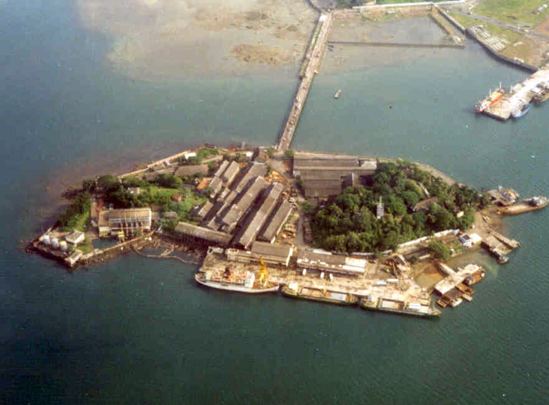

Radhanagar Beach
Asia's Best Beach - Time Magazine
Havelock Island, Andaman

About Radhanagar Beach
Radhanagar Beach, also known as Beach No. 7, is one of the most beautiful beaches in Asia. Located on Havelock Island, this pristine beach features powdery white sand, crystal-clear turquoise waters, and breathtaking sunsets. The beach is surrounded by lush green forests, creating a perfect tropical paradise. It's an ideal spot for swimming, sunbathing, and photography.
White Sand
Pristine Beach
Clear Waters
Safe Swimming
Sunset Views
Spectacular
Why Visit Radhanagar Beach
- Ranked as Asia's best beach by Time Magazine
- Crystal clear turquoise waters perfect for swimming
- Powdery white sand stretching over 2 kilometers
- Stunning sunset views every evening
- Surrounded by lush tropical forests
- Safe and clean beach with lifeguards
- Perfect for photography and relaxation
- Less crowded compared to other beaches
- Natural beauty with minimal commercialization
- Ideal for romantic walks and family picnics
Best Time to Visit
October to May
The best time to visit Radhanagar Beach is between October and May when the weather is pleasant, the sea is calm, and the water is crystal clear. Avoid monsoon season (June to September) due to rough seas and heavy rainfall.
Sunrise: 5:30 AM | Sunset: 5:30 PM
Things to Do
Swimming
Enjoy safe swimming in the clear shallow waters. The beach has a gradual slope making it perfect for all age groups.
Photography
Capture stunning photographs of the pristine beach, turquoise waters, and spectacular sunsets.
Beach Walks
Take romantic walks along the 2km stretch of white sand beach surrounded by natural beauty.
How to Reach
From Port Blair: Take a ferry to Havelock Island (2 hours). From Havelock jetty, it's 12 km by road (30 minutes).
Local Transport: Auto-rickshaws, taxis, and rental bikes available from Havelock jetty.
Entry Fee: Free entry for all visitors
Frequently Asked Questions
Is swimming safe at Radhanagar Beach?
Yes, swimming is safe at Radhanagar Beach. The water is shallow with a gradual slope, and lifeguards are present during peak hours. However, avoid swimming during monsoon season.
What is the best time to visit for sunset?
Arrive by 4:30 PM to get a good spot. Sunset usually occurs around 5:30 PM, offering spectacular views with the sun setting over the horizon.
Are there food and facilities available?
Yes, there are small food stalls and shacks near the beach offering snacks, drinks, and basic meals. Changing rooms and washrooms are also available.
Can I stay near Radhanagar Beach?
Yes, there are several resorts and hotels near Radhanagar Beach ranging from budget to luxury. Book in advance during peak season (December to February).
Is Radhanagar Beach crowded?
Compared to other beaches, Radhanagar is less crowded. However, it can get busy during peak tourist season (December to February). Visit early morning or late afternoon for a peaceful experience.